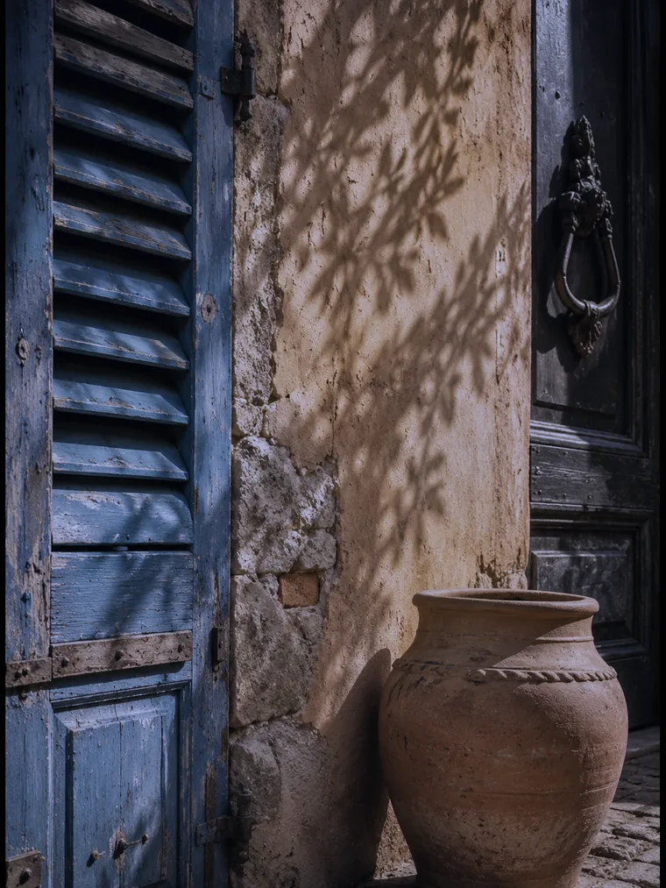
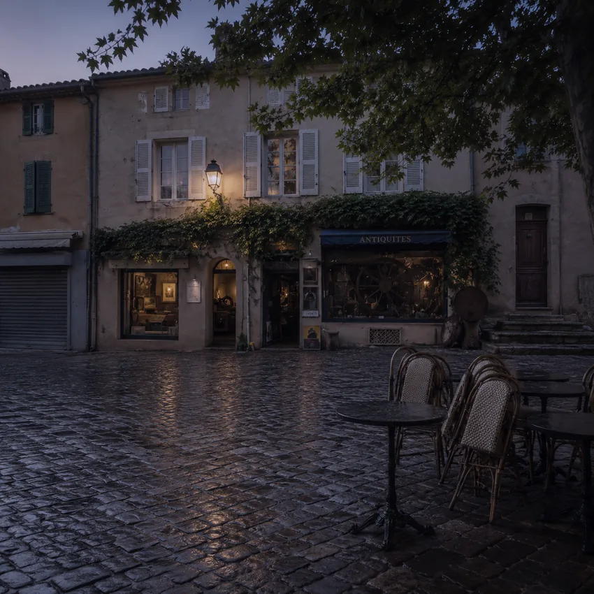

Web Essentiel
À partir de850 €
- ✓ Site vitrine sur mesure
- ✓ 100% responsive mobile
- ✓ Formulaire de contact
- ✓ SEO local Saint-Tropez inclus
- ✓ Propriété 100% à vous
Restaurant gastronomique, agence immobilière de prestige, conciergerie ou broker yacht : à Saint-Tropez, votre site internet est votre première impression mondiale. Je crée des sites sur mesure, codés à la main, à l'image de votre établissement.
Saint-Tropez reçoit chaque année plus de 5 millions de visiteurs pour seulement 4 500 habitants permanents. C'est l'une des destinations touristiques les plus prisées au monde — et l'un des marchés les plus compétitifs de France pour les professionnels du luxe, de l'immobilier et de la restauration.
Dans ce contexte, votre site internet n'est pas une option. C'est votre carte de visite mondiale. Un client londonien qui cherche une agence immobilière pour sa villa, un Parisien qui réserve sa table gastronomique pour le week-end, un investisseur qui compare les conciergeries — tous passent par Google avant de vous appeler.
Basé à Saint-Tropez, je connais ce marché de l'intérieur. Je crée des sites qui correspondent à l'image d'excellence de Saint-Tropez — rapides, élégants, multilingues si besoin, et visibles sur Google pour les requêtes qui comptent pour votre activité.
À Saint-Tropez, votre concurrent a déjà un site. La question est : le vôtre est-il à la hauteur de votre établissement ?Discutons de votre projet

Saint-Tropez n'est pas une ville comme les autres. Vos clients arrivent du monde entier — Royaume-Uni, Russie, Scandinavie, États-Unis, Moyen-Orient. Ils sont exigeants, connectés, et prennent leurs décisions en ligne avant même d'arriver sur la Côte d'Azur.
Un site lent, vieilli ou mal présenté ne donne pas une deuxième chance dans ce marché. En moins de 5 secondes, votre visiteur a jugé votre établissement et décidé de rester ou d'aller chez votre concurrent.
Je crée des sites pensés pour cette clientèle internationale : design raffiné, typographie soignée, galeries immersives, version multilingue FR/EN disponible, chargement optimisé sur mobile. Un site qui donne envie avant même que le client soit arrivé.

Saint-Tropez concentre des secteurs d'activité très spécifiques. Chaque type d'établissement a ses propres besoins en ligne — je maîtrise les spécificités de chacun.
Listings filtrables, fiches villas, galerie premium. Chatbot leads, brochure automatique, multilingue FR/EN. Visible sur "agence immobilière Saint-Tropez" et "villa à vendre Saint-Tropez".
Catalogue de flotte, galerie multimédia, formulaire de réservation. Référencé sur "broker yacht Saint-Tropez", "location yacht Côte d'Azur", "charter bateau Golfe Saint-Tropez".
Galerie immersive, menu en ligne, réservation WhatsApp ou directe. Multilingue FR/EN/IT. Référencé sur "restaurant Saint-Tropez", "gastronomie Golfe Saint-Tropez".
Électriciens, coiffeurs, prestataires de service — sites rapides avec bouton d'appel direct et SEO local Saint-Tropez pour capter la demande locale et saisonnière.
Votre activité n'est pas listée ? J'accompagne tous les professionnels de Saint-Tropez : photographes, architectes, décorateurs, prestataires événementiels, guides touristiques… Chaque site est conçu sur mesure.
Parlons de votre projetSaint-Tropez n'est pas seulement une ville du Var. C'est une marque mondiale. Les yachts, les agences immobilières de prestige, les conciergeries de luxe, les restaurants étoilés — tout contribue à une image d'exception que vos clients associent immédiatement à votre établissement.
Dans ce contexte, un site internet médiocre nuit directement à votre image. Un client qui cherche "agence immobilière Saint-Tropez" sur Google s'attend à trouver un site à la hauteur de la destination. Si le vôtre est lent, vieilli ou difficile à naviguer sur mobile, il passe au suivant.
Les requêtes Google liées à Saint-Tropez sont parmi les plus compétitives de la région PACA. "Restaurant Saint-Tropez", "villa à vendre Saint-Tropez", "agence immobilière Saint-Tropez", "broker yacht Saint-Tropez" — ces requêtes reçoivent des milliers de recherches par mois, avec un pic exceptionnel entre avril et septembre.
Chaque site que je crée est optimisé pour le référencement local Saint-Tropez dès le premier jour : balise H1 géolocalisée, Schema.org LocalBusiness avec vos coordonnées précises, Google Business Profile optimisé et lié au site, sitemap soumis à Google Search Console. Vous apparaissez dans les résultats locaux — et dans la Local Pack (les 3 résultats avec carte), là où 60% des clics se concentrent.
Je ne suis pas une agence web parisienne qui crée des sites génériques depuis un bureau à 900 km. Je suis basé à Saint-Tropez. Je connais la saisonnalité, les types de clients, les quartiers, les concurrents, les spécificités de chaque secteur d'activité local.
Quand je crée un site pour une agence immobilière à Saint-Tropez, je sais ce que recherche un investisseur suisse ou anglais. Quand je crée un site pour un restaurant à Saint-Tropez, je sais ce que cherche un client qui dîne ici en juillet. Quand je crée un site pour un broker yacht, je connais les attentes de la clientèle nautisme de la Côte d'Azur. Cette connaissance terrain se traduit directement dans le contenu et le design de votre site.
À Saint-Tropez, tout le monde a un site. Presque personne n'en a un qui travaille.
Sud Web Project — Saint-TropezCes maquettes de sites web vous permettent de visualiser les possibilités pour votre activité dans le Golfe de Saint-Tropez.

Site 7 pages haut de gamme, multilingue FR/EN/IT, WhatsApp réservations, galerie immersive. performances optimisées. Référencé "restaurant Saint-Tropez".
Voir la démo
Site multilingue FR/EN/IT, chatbot leads, brochure automatique, galerie premium. Conçu pour capter des mandats et des acheteurs internationaux.
Voir la démo
Site 6 pages, performances optimisées. Générer des appels en urgence et des demandes de devis. SEO optimisé "électricien Saint-Tropez".
Voir la démo
Restaurant, agence immobilière, broker yacht, conciergerie… Devis gratuit sous 24h, maquette avant de commencer, livraison engagée.
Demander un devisVotre site existe déjà mais il est lent, vieilli ou mal référencé ? Je le refonds entièrement — nouveau design, nouveau code, conçu pour viser performances optimisées. Score avant/après mesuré.
Découvrir l'offre de refonteVotre site reste rapide, sécurisé et à jour. Forfaits à partir de 60 €/mois — modifications mensuelles, sauvegardes, mises à jour sécurité, support prioritaire.
Voir les forfaits maintenanceJe suis sur place. Je me déplace chez vous pour les réunions. Je connais chaque quartier, chaque type de clientèle, chaque saison. Ce n'est pas du déclaratif — c'est du quotidien.
Votre clientèle est internationale. Je crée des sites en plusieurs langues, avec une interface fluide et un contenu adapté à chaque marché cible.
Zéro WordPress, 100% code à la main. Un site qui reste fluide sur mobile 4G. Google récompense la vitesse avec de meilleures positions.
H1 géolocalisé, Schema.org LocalBusiness, Google Business Profile optimisé. Vous apparaissez sur "votre secteur + Saint-Tropez".
Votre site vous appartient entièrement — code, contenu, domaine. Aucun abonnement obligatoire, aucun enfermement plateforme.
Vous parlez directement avec moi — Guillaume, le développeur. Pas un commercial, pas une agence qui sous-traite. Devis le jour même, réponse sous 24h.
On discute de votre établissement, votre clientèle cible, vos objectifs. Je vous envoie un devis clair sous 24h. Sans engagement.
Je vous propose une direction artistique adaptée à votre image. Vous validez avant que je commence. Aucune surprise.
Code à la main, optimisé Saint-Tropez. Tests mobile, vitesse, multilingue si besoin. Vous suivez l'avancement.
Lancement, Google Search Console, Google Business Profile. Je reste disponible — on est voisins.
Un client venu de Londres ne visitera jamais votre établissement. Il visitera votre site.
Sud Web Project — Saint-TropezPas de frais cachés. Un devis clair avant de commencer — vous restez propriétaire à 100%.
Basé à Saint-Tropez, je crée des sites internet pour les professionnels de tout le Golfe. Chaque village a sa page dédiée avec un contenu et un SEO spécifiques.
Création site internet Saint-Tropez · Développeur web Golfe de Saint-Tropez · Ramatuelle · Grimaud · Cogolin · Sainte-Maxime · Var (83)
Le tarif ne dépend pas simplement du nombre de pages. Chaque projet est différent : le prix dépend du niveau de personnalisation, des objectifs, des fonctionnalités et de l'accompagnement souhaité. Mes projets commencent à 850 € avec l'offre Essentiel. L'offre Premium commence à 1 500 €. Les projets nécessitant une expérience entièrement personnalisée font l'objet d'un devis sur mesure avec l'offre Ultra. Devis gratuit sous 24h, sans engagement.
Oui. Sud Web Project est basé à Saint-Tropez. Je me déplace chez vous pour les réunions, je connais le marché local, la clientèle internationale, les quartiers et les spécificités de chaque type d'établissement. Ce n'est pas une agence distante — c'est un développeur local.
Oui. Je conçois des sites multilingues en français, anglais, italien et dans d'autres langues selon votre clientèle cible. Essentiel pour les agences immobilières, conciergeries, restaurants et brokers yacht de Saint-Tropez qui accueillent une clientèle internationale.
Un site vitrine essentiel est livré en 4 à 5 jours ouvrés. Un site Premium pour un restaurant ou une agence immobilière en 2 à 3 semaines. Un site Ultra multilingue avec galerie immersive en 3 à 5 semaines. Les délais sont engagés dans le devis.
Oui. Chaque site est optimisé pour le référencement local dès le départ : H1 géolocalisé, Schema.org, Google Business Profile configuré, sitemap soumis à Google Search Console. Vous apparaissez sur "votre secteur + Saint-Tropez".
Oui. J'accompagne les professionnels de tout le Golfe : Ramatuelle, Grimaud, Cogolin, Sainte-Maxime et Gassin. Chaque village a sa propre page dédiée avec un SEO spécifique.
Basé à Saint-Tropez, je crée des sites internet qui correspondent à l'exigence de la destination. Devis gratuit sous 24h, maquette avant de commencer, livraison engagée.
Devis 100% gratuit · Sans engagement · Réponse sous 24h · Basé à Saint-Tropez, Var 83